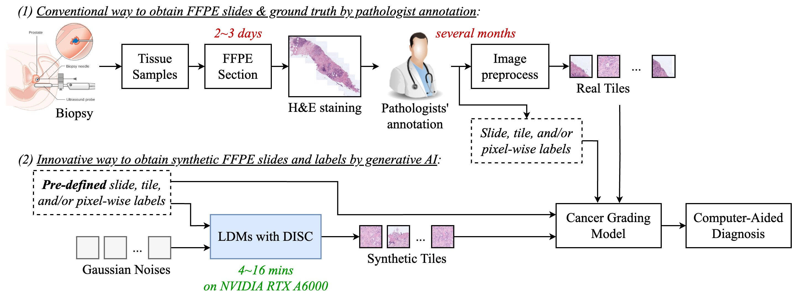
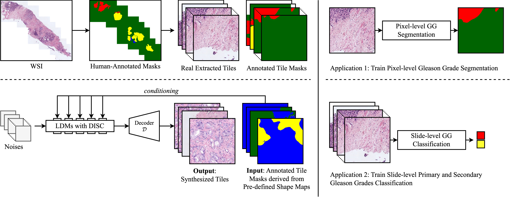
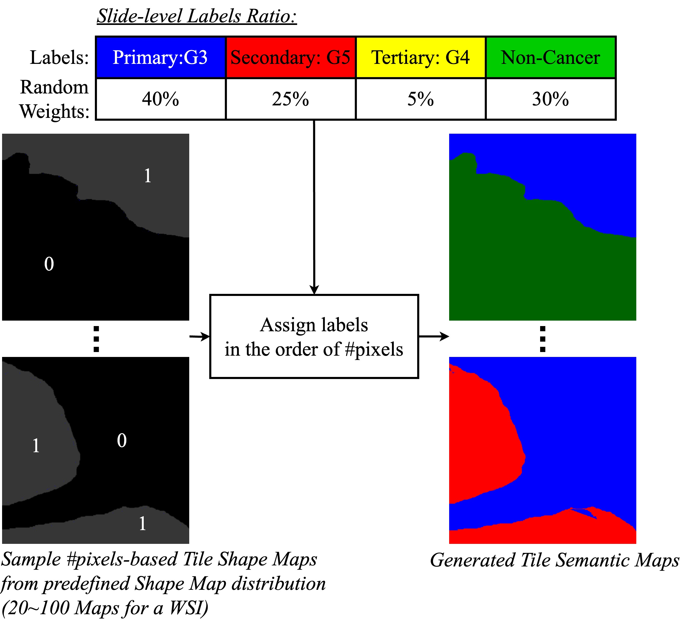

DISC: Latent Diffusion Models with Self-Distillation from Separated Conditions for Prostate Cancer Grading
| Man M. Ho | Elham Ghelichkhan | Yosep Chong | Beatrice Knudsen | Tolga Tasdizen |
|
The University of Utah |
| [Paper] | [Code] |

Abstract
Latent Diffusion Models (LDMs) have demonstrated their ability to generate high-fidelity images from noise, offering a promising approach for augmenting histopathology images in training cancer grading models. While previous works have successfully generated high-fidelity histopathology images using LDMs, the generation of image tiles to improve slide-level cancer grading has not been thoroughly explored. Additionally, LDMs face challenges in accurately generating admixtures of multiple cancer grades in a tile when conditioned by complex masks. In this study, we train specific LDMs to generate multiple Gleason Grades (GGs) by leveraging pixel-wise annotated maps. To enable slide-level cancer grading for LDMs-generated patches, we introduce a novel sampling technique to generate patches from a virtual Whole Slide Image (WSI) with its primary and secondary GGs. Furthermore, we tackle the challenge of generating samples with complex GG-guided masks in LDMs by introducing Self-Distillation from Separated Conditions (DISC), a novel approach that enhances GG patterns aligned with GG-guided masks. Finally, we design a training framework for slide-level prostate cancer grading, where synthetic tiles are effectively utilized to improve the cancer grading performance of existing models. As a result, this work surpasses previous works in two domains: 1) our LDMs enhanced with DISC produce more accurate tiles in terms of GG patterns, and 2) our training scheme, incorporating synthetic data, significantly improves the generalization of the baseline model for prostate cancer grading, particularly in challenging cases of rare GG5, demonstrating the potential of generative models to enhance cancer grading when data is limited.
Overview
Besides the real patches for training Prostate Cancer (PCa) grading model, we introduce Latent Diffusion Models (LDMs) with Self-Distillation from Separated Conditions (DISC). To enable slide-cancer grading for the generated patches, we provide a sampling technique to form a synthesized Whole Slide Image (WSI). The patches are then used to extract feature representations with a pre-trained model, and finally fed to a cancer-grading Multiple Instance Learning (MIL) model for training. For the best usage and further analysis of synthetic WSIs, we train real and synthetic WSIs simultaneously and balance training errors from these data types with a weight.
Define Tile Mask Shapes

Sampling Tile Masks and Label Expansion
We preprocess human-annotated masks in SICAPv2, converting them to prepared masks with labels mapped to their frequency distribution (semantic information removed). To generate patches from a synthetic WSI indicating a primary GG, we randomly choose a secondary GG and introduce non-overlapped random selection by setting random weights for all labels to control pseudo labels assigned to the patches.
Latent Diffusion Models conditioned by Tile Mask
Latent Diffusion Models [Stable Diffusion] conditioned by guided masks with multiple Gleason Grades (GGs)
Denoising with Self-Distillation from Separated Conditions (DISC)

We introduce Self-Distillation from Separated Conditions (DISC) to improve image synthesis accuracy. Instead of using the initial complex guided mask with multiple Gleason Grades (GGs) (top), we generate separate latent features with distinct labels, which are fused with the mask in the final step for robust patterns. However, this approach incurs a computational cost of K times, the number of labels. To address this, we train the main process to distill information from fused latent features obtained from the Condition-Separated Denoising Process (bottom).
Improving Stable Diffusion (SD)
 A qualitative comparison between LayoutDiffusion (LD), Stable Diffusion (SD), and our proposed technique, SD with Self-Distillation from Separated Conditions (DISC) for histopathology image synthesis. This work yields higher-confidence label patterns compared to LayoutDiffusion and SD. Notably,
LD tends to ignore small bounding boxes to generate patterns for larger bounding boxes (rows 4 and 5),
while SD tends to generate fused glands representing GG4 for Non-Cancer regions (highlighted rectangles) and sheets of cells representing GG5 for GG3-indicated regions(indicated by yellow arrows).
Labels (also applied for layouts in column 2): Non-Cancer(green), GG3(blue), GG4(yellow), GG5(red).
A qualitative comparison between LayoutDiffusion (LD), Stable Diffusion (SD), and our proposed technique, SD with Self-Distillation from Separated Conditions (DISC) for histopathology image synthesis. This work yields higher-confidence label patterns compared to LayoutDiffusion and SD. Notably,
LD tends to ignore small bounding boxes to generate patterns for larger bounding boxes (rows 4 and 5),
while SD tends to generate fused glands representing GG4 for Non-Cancer regions (highlighted rectangles) and sheets of cells representing GG5 for GG3-indicated regions(indicated by yellow arrows).
Labels (also applied for layouts in column 2): Non-Cancer(green), GG3(blue), GG4(yellow), GG5(red).
Improving MIL-based Cancer Grading Models (TransMIL)
 A quantitative comparison among TransMIL, Mixed Supervision, and TransMIL jointly trained
with tiles generated by LayoutDiffusion (LD) and Stable Diffusion with Self-Distillation from
Separated Conditions (DISC) with a balance weight in [0.0, 0.9] in AUCROC. The feature representation
extractor used is ViT-small (patch of 16) pre-trained on histopathology images with DINO. All models are
trained on the SICAPv2 and evaluated on both in-distribution SICAPv2 and
Out-Of-Distribution (OOD) PANDA. Our generated data consistently improves
cancer grading performance with higher AUCROC. Please check our Supplemental Document for more results
including the feature representation extractors ResNet50 pre-trained on ImageNet and histopathology images
with MoCov2.
A quantitative comparison among TransMIL, Mixed Supervision, and TransMIL jointly trained
with tiles generated by LayoutDiffusion (LD) and Stable Diffusion with Self-Distillation from
Separated Conditions (DISC) with a balance weight in [0.0, 0.9] in AUCROC. The feature representation
extractor used is ViT-small (patch of 16) pre-trained on histopathology images with DINO. All models are
trained on the SICAPv2 and evaluated on both in-distribution SICAPv2 and
Out-Of-Distribution (OOD) PANDA. Our generated data consistently improves
cancer grading performance with higher AUCROC. Please check our Supplemental Document for more results
including the feature representation extractors ResNet50 pre-trained on ImageNet and histopathology images
with MoCov2.
If you find our work useful, please consider citing
TBD
License
This work, including the trained models, code, and dataset, is for non-commercial uses and research purposes only.